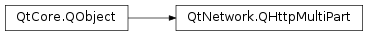

QHttpMultiPart¶
Synopsis¶
Functions¶
- def
append(httpPart) - def
boundary() - def
setBoundary(boundary) - def
setContentType(contentType)
Detailed Description¶
The
PySide2.QtNetwork.QHttpMultiPartclass resembles a MIME multipart message to be sent over HTTP.The
PySide2.QtNetwork.QHttpMultiPartresembles a MIME multipart message, as described in RFC 2046, which is to be sent over HTTP. A multipart message consists of an arbitrary number of body parts (seePySide2.QtNetwork.QHttpPart), which are separated by a unique boundary. The boundary of thePySide2.QtNetwork.QHttpMultiPartis constructed with the string “boundary_.oOo._” followed by random characters, and provides enough uniqueness to make sure it does not occur inside the parts itself. If desired, the boundary can still be set viaPySide2.QtNetwork.QHttpMultiPart.setBoundary().As an example, consider the following code snippet, which constructs a multipart message containing a text part followed by an image part:
QHttpMultiPart *multiPart = new QHttpMultiPart(QHttpMultiPart::FormDataType); QHttpPart textPart; textPart.setHeader(QNetworkRequest::ContentDispositionHeader, QVariant("form-data; name=\"text\"")); textPart.setBody("my text"); QHttpPart imagePart; imagePart.setHeader(QNetworkRequest::ContentTypeHeader, QVariant("image/jpeg")); imagePart.setHeader(QNetworkRequest::ContentDispositionHeader, QVariant("form-data; name=\"image\"")); QFile *file = new QFile("image.jpg"); file->open(QIODevice::ReadOnly); imagePart.setBodyDevice(file); file->setParent(multiPart); // we cannot delete the file now, so delete it with the multiPart multiPart->append(textPart); multiPart->append(imagePart); QUrl url("http://my.server.tld"); QNetworkRequest request(url); QNetworkAccessManager manager; QNetworkReply *reply = manager.post(request, multiPart); multiPart->setParent(reply); // delete the multiPart with the reply // here connect signals etc.
-
class
PySide2.QtNetwork.QHttpMultiPart(contentType[, parent=nullptr])¶ -
class
PySide2.QtNetwork.QHttpMultiPart([parent=nullptr]) Parameters: - contentType –
PySide2.QtNetwork.QHttpMultiPart.ContentType - parent –
PySide2.QtCore.QObject
Constructs a
PySide2.QtNetwork.QHttpMultiPartwith content typecontentTypeand sets parent as the parent object.See also
QHttpMultiPart.ContentTypeConstructs a
PySide2.QtNetwork.QHttpMultiPartwith content typeMixedTypeand setsparentas the parent object.See also
QHttpMultiPart.ContentType- contentType –
-
PySide2.QtNetwork.QHttpMultiPart.ContentType¶ List of known content types for a multipart subtype as described in RFC 2046 and others.
Constant Description QHttpMultiPart.MixedType corresponds to the “multipart/mixed” subtype, meaning the body parts are independent of each other, as described in RFC 2046. QHttpMultiPart.RelatedType corresponds to the “multipart/related” subtype, meaning the body parts are related to each other, as described in RFC 2387. QHttpMultiPart.FormDataType corresponds to the “multipart/form-data” subtype, meaning the body parts contain form elements, as described in RFC 2388. QHttpMultiPart.AlternativeType corresponds to the “multipart/alternative” subtype, meaning the body parts are alternative representations of the same information, as described in RFC 2046.
-
PySide2.QtNetwork.QHttpMultiPart.append(httpPart)¶ Parameters: httpPart – PySide2.QtNetwork.QHttpPartAppends
httpPartto this multipart.
-
PySide2.QtNetwork.QHttpMultiPart.boundary()¶ Return type: PySide2.QtCore.QByteArrayreturns the boundary.
-
PySide2.QtNetwork.QHttpMultiPart.setBoundary(boundary)¶ Parameters: boundary – PySide2.QtCore.QByteArraySets the boundary to
boundary.Usually, you do not need to generate a boundary yourself; upon construction the boundary is initiated with the string “boundary_.oOo._” followed by random characters, and provides enough uniqueness to make sure it does not occur inside the parts itself.
-
PySide2.QtNetwork.QHttpMultiPart.setContentType(contentType)¶ Parameters: contentType – PySide2.QtNetwork.QHttpMultiPart.ContentTypeSets the content type to
contentType. The content type will be used in the HTTP header section when sending the multipart message viaQNetworkAccessManager.post(). In case you want to use a multipart subtype not contained inQHttpMultiPart.ContentType, you can add the “Content-Type” header field to thePySide2.QtNetwork.QNetworkRequestby hand, and then use this request together with the multipart message for posting.See also
QHttpMultiPart.ContentTypeQNetworkAccessManager.post()
© 2018 The Qt Company Ltd. Documentation contributions included herein are the copyrights of their respective owners. The documentation provided herein is licensed under the terms of the GNU Free Documentation License version 1.3 as published by the Free Software Foundation. Qt and respective logos are trademarks of The Qt Company Ltd. in Finland and/or other countries worldwide. All other trademarks are property of their respective owners.